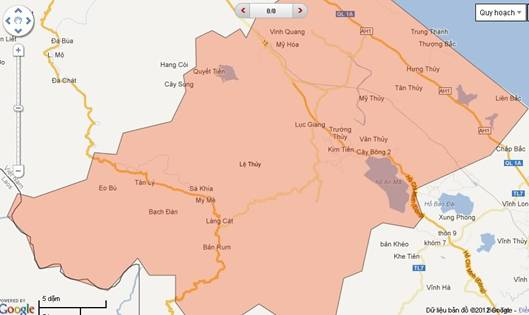
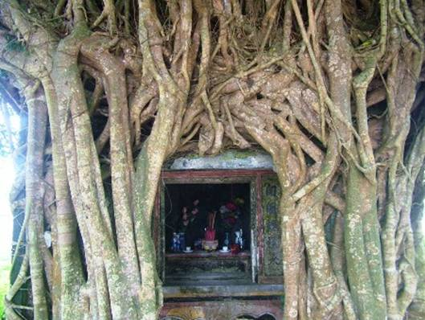
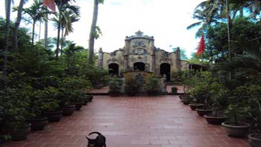
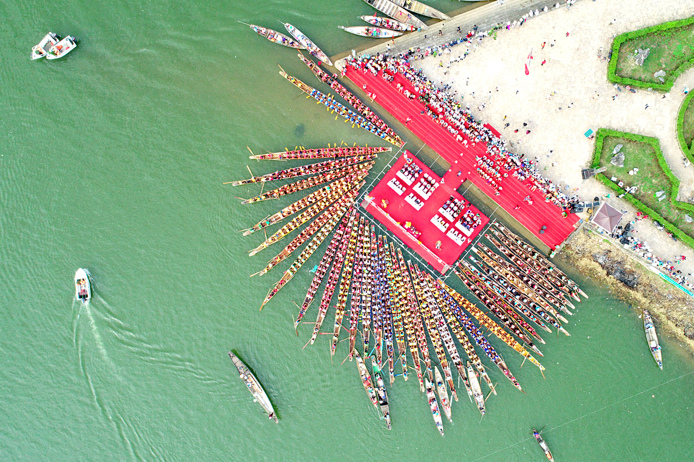
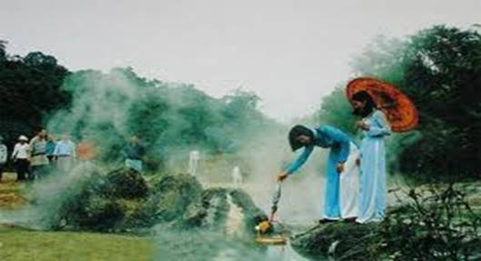
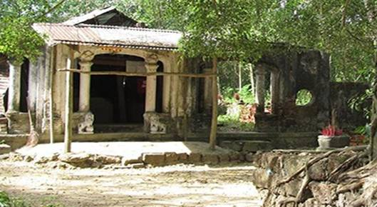
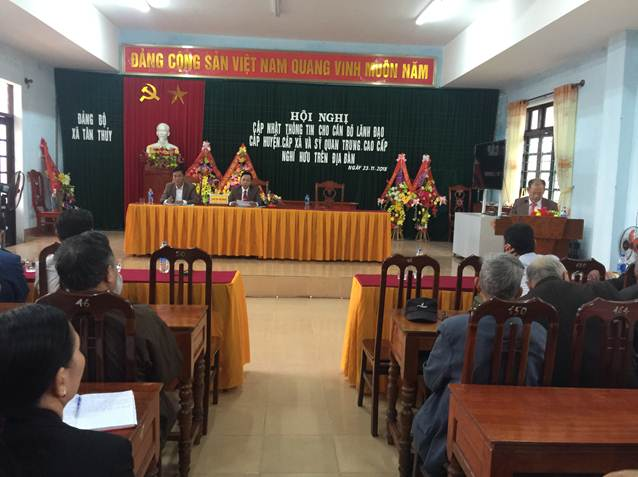
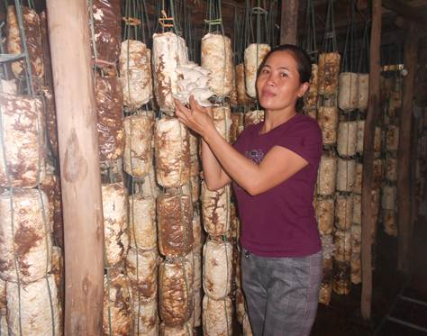
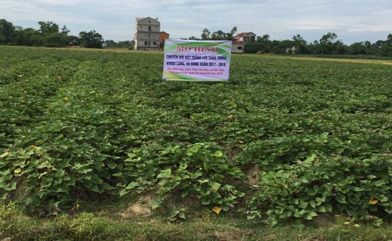
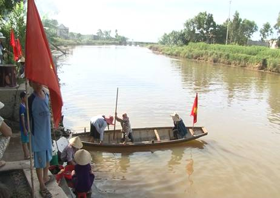

Giới Thiệu
Huyện Lệ Thủy - Tỉnh Quảng Bình
Lệ Thủy là một huyện đồng bằng thuộc tỉnh Quảng Bình,Việt Nam.
Phía nam giáp huyện Vĩnh Linh (thuộc tỉnh Quảng Trị),phía bắc
giáp huyện Quảng Ninh (Quảng Bình), phía Tây giáp nước CHDCND Lào,
phía Đông giáp Biển Đông.

Bản đồ hành chính huyện Lệ Thủy
Diện tích tự nhiên 1.416,11 km2, có 36.545 hộ với 141.380 nhân khẩu
(Năm 2012), mật độ dân số 99,8 người/ km2, có hai dân tộc chính là Kinh và Vân Kiều.
Đây là quê hương của Sùng Nham hầu Dương Văn An, Kim tử Vinh Lộc Đại phu Đặng Đại Lược,
Thạc Đức hầu Đặng Đại Độ, Sư bảo Nguyễn Đăng Tuân, Vũ Đăng Phương, Đại tướngVõ Nguyên Giáp,
Tổng thống Việt Nam Cộng hòa Ngô Đình Diệm. Lệ Thủy nổi tiếng với sông Kiến Giang,
khu nghỉ mát suối nước khoáng Bang, văn hóa đặc trưng Hò khoan Lệ Thủy,
trong đó có điệu hò khoan chèo đò, hò giã gạo. Hằng năm, vào ngày 2 tháng 9,
nơi đây diễn ra đua thuyền truyền thống trên sôn Kiến Giang và các Lễ hội
nội bộ của một số xã như: Dương Thủy, Sen Thủy, Sơn Thủy...
TrongChiến tranh Việt Nam, nơi đây là chiến trường ác liệt với mật độ
bom rải thảm của Không quân Mỹ với mật độ dày đặc.
Lệ Thủy các các di tích lịch sử nổi bật Chùa An Xá ở Lộc Thủy,
Miếu Thần Hoàng ở Tân Thủy, Miếu An Sinh ở Văn Thủy.

Miếu An Sinh ở Văn Thủy, Lệ Thủy, Quảng Bình

Chùa An Xá ở Lộc Thủy, Lệ Thủy, Quảng Bình

Lễ hội văn hóa cấp tỉnh: Bơi đua thuyền truyền thống trên sông Kiến Giang
Địa hình của huyện đồng bằng, ven biển hẹp và thấp, độ cao dưới 10 mét;
sát biển có các dải cát cao 2 - 3 mét đến 50 mét, độ dốc lớn. Phía Tây đồi núi thấp,
đỉnh cao nhất Thu Lu 925 mét; Sông lớn có Kiến Giang, Long Đại và nhiều sông, suối nhỏ:
Rào Chân, Linh Giang, Khe Tích, Sông Thác Cốc...Có đường Quốc lộ 1A; Quốc lộ 15A,
đường Hồ Chí Minh nhánh Đông và nhánh Tây, có đường sắt Bắc - Nam đi qua suốt chiều dài của huyện;
02 đường tỉnh lộ 10 và 16 đi ngang nối các Quốc lộ; huyện có 8 tuyến đường nội huyện dài 97Km,
28/28 xã thị trấn có đường ô tô đến trung tâm xã; phủ sóng điện thoại đến 28 xã, thị trấn,
16 xã có điểm Bưu điện văn hóa xã; Tổng số chợ trên địa bàn 28 cái, trong đó chợ thị trấn 03 cái,
chợ xã 25 cái. Lệ Thủy có chùa Hoằng Phúc (Còn gọi là Chùa Quan)
xây dựng từ năm 1609 có 09 quả chuông nặng hàng nghìn cân;
có suối nước khoáng Bang chứa bicacbonat natri với nhiệt độ sôi tự nhiên 1050C.

Suối nước khoáng Bang chứa bicacbonat natri với nhiệt độ sôi tự nhiên 1050C

Chùa Hoằng Phúc Trên nền đất cũ, xã Mỹ Thủy, Lệ Thủy
Huyện gồm 02 thị trấn là Kiến Giang và Lệ Ninh và 26 xã An Thủy,
Phong Thủy, Lộc Thủy, Xuân Thủy, Liên Thủy, Tân Thủy, Dương Thủy,
Mỹ Thủy, Thái Thủy, Sen Thủy, Hưng Thủy, Cam Thủy, Thanh Thủy, Hồng Thủy,
Ngư Thủy Bắc, Ngư Thủy Trung, Ngư Thủy Nam, Mai Thủy, Phú Thủy, Sơn Thủy,
Trường Thủy, Văn Thủy, Hoa Thủy, Kim Thủy, Ngân Thủy, Lâm Thủy.
Huyện Lệ Thủy có từ lâu thuộc phủ Tân Bình, năm 1831 thuộc phủ Quảng Ninh.
Từ 1977 đến 1989 nhập với huyện Quảng Ninh thành huyện Lệ Ninh, tỉnh Bình Trị Thiên.
Cuối năm 1989 tách huyện Lệ Ninh tái lập huyện Lệ Thủy thuộc tỉnh Quảng Bình.
Tin tức - Sự kiện
TÂN THỦY TỔ HỘI NGHỊ CẬP NHẬT THÔNG TIN THỜI SỰ, KINH TẾ, VĂN HÓA XÃ HỘI NĂM 2018 CHO CÁC ĐỒNG CHÍ NGUYÊN CÁN BỘ LÃNH ĐẠO QUẢN LÝ CẤP HUYỆN, CẤP XÃ VÀ SỸ QUAN TRUNG, CAO CẤP TRONG LỰC LƯỢNG VŨ TRANG NGHỈ HƯU TRÊN ĐỊA BÀN Thực hiện kế hoạch số 05-KH/TGHU, ngày 30/3/2017 của Ban Tuyên giáo Huyện ủy, ngày 23/11/2018 Ban Thường vụ Đảng ủy xã Tân Thủy tổ chức Hội nghị cập...xem tiếp
GƯƠNG PHỤ NỮ LÀM GIÀU TỪ TRỒNG NẤM 
Với mong muốn làm giàu trên chính mảnh đất quê hương, chị Phan Thị Quyên hội viên Chi hội phụ nữ thôn Lộc Hạ, xã An Thủy cùng chồng biến ý tưởng khởi nghiệp thành hiện thực khi mạnh dạn đầu tư xây dựng mô hình trồng nấm mang lại hiệu quả kinh tế cao...xem tiếp
Xây dựng nông thôn mới
XÃ CAM THỦY, LỆ THỦY ĐÓN BẰNG CÔNG NHẬN XÃ ĐẠT CHUẨN NÔNG THÔN MỚI NĂM 2018Xã Cam Thủy, huyện Lệ Thủy vừa tổ chức Hội nghị tổng kết thực hiện Chương trình MTQG xây dựng NTM và đón Bằng công nhận xã đạt chuẩn Nông thôn mới năm 2018. Bước vào xây dựng nông thôn mới, xã Cam Thủy chỉ đạt 4/19 tiêu chí. Sau hơn 6 năm thực hiện, với sự nỗ lực của cấp ủy Đảng, chính quyền và toàn thể nhân dân trong xã, đến nay, xã Cam Thủy đã hoàn thành 19/19 tiêu chí nông thôn mới... xem tiếp
TỔ CHỨC HỘI NGHỊ ĐẦU BỜ “MÔ HÌNH CHUYỂN ĐỔI ĐẤT TRỒNG LÚA SANG TRỒNG RAU MÀU (KHOAI LANG) VỤ ĐÔNG XUÂN 2017 - 2018” TẠI XÃ TÂN THỦY 
Ngày 29 tháng 5 năm 2018, tại thôn Tân Hòa, xã Tân Thủy, Lệ Thủy, Quảng Bình, Ủy ban nhân dân huyện, phòng Nông nghiệp và Phát triển nông thôn, Trạm Khuyến nông huyện đã tổ chức Hội nghị đầu bờ “Mô hình chuyển đổi đất trồng lúa sang trồng rau màu (Khoai lang) vụ Đông – Xuân 2017 – 2018 tại Tân Thủy... xem tiếp
ĐỘI TÌNH NGUYỆN THU GOM RÁC GÓP PHẦN LÀM SẠCH ĐẸP DÒNG KIẾN GIANG 
Được thành lập từ tháng 10 năm 2015, Đội tình nguyện thu gom rác trên sông Kiến Giang của Hội phụ nữ xã An Thủy, huyện Lệ Thủy luôn duy trì hoạt động tốt. Đội huy động được 60 chị em ở 06 chi hội thôn trên địa bàn tham gia, mỗi chi hội có 2 thuyền nhôm tiến hành thu gom rác thải trôi nổi trên mặt sông Kiến Giang đoạn qua địa bàn xã. Công việc của Đội tình nguyện thu gom rác xã An Thủy... xem tiếp
LỆ THỦY NHÂN RỘNG MÔ HÌNH “ĐƯỜNG HOA PHỤ NỮ”
Hiện nay, mô hình “Đường hoa phụ nữ” đang được triển khai sâu rộng trên địa bàn toàn huyện, không chỉ tạo cảnh quan môi trường xanh - sạch - đẹp, mà còn góp phần nâng cao ý thức bảo vệ môi trường của mỗi người dân. Để mô hình triển khai hiệu quả, sâu rộng, Hội liên hiệp phụ nữ các cấp trong tỉnh đã lên kế hoạch triển khai trồng, chăm sóc hoa trên các tuyến đường gắn với thực hiện “Đoạn đường phụ nữ tự quản” và được hầu hết hội viên phụ nữ cùng người dân tích cực hưởng ứng... xem tiếp
LỆ THỦY PHÁT HUY TIỀM NĂNG THẾ MẠNH, TẠO RA SẢN PHẨM ĐẶC TRƯNG CỦA ĐỊA PHƯƠNG
Thời gian qua, phong trào thi đua SXKD giỏi, giúp nhau làm giàu và xóa đói giảm nghèo bền vững đã tuyên truyền, vận động, giúp đỡ hội viên nông dân phát triển sản xuất, chuyển dịch cơ cấu cây trồng, vật nuôi; khuyến khích phát triển các ngành nghề phụ và tham gia kinh doanh dịch vụ; hỗ trợ giống, vốn và kỹ thuật cho nông dân phát triển, mở rộng sản xuất để ngày càng xuất hiện nhiều mô hình kinh tế cho thu nhập cao và nhiều sản phẩm đặc trưng của các địa phương. xem tiếp